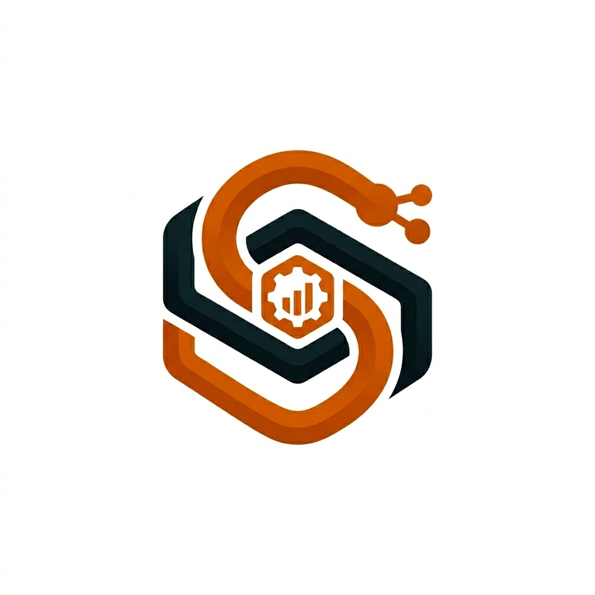

sPanel ID merupakan platform inovatif berbasis web statik yang dirancang khusus sebagai lingkungan pembelajaran pembuatan dan publikasi website secara modern, praktis, dan ditenagai penuh oleh arsitektur serverless Firebase.
Dukung pengembangan sPanel ID melalui Scan QR Code DANA di bawah ini: